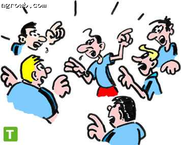
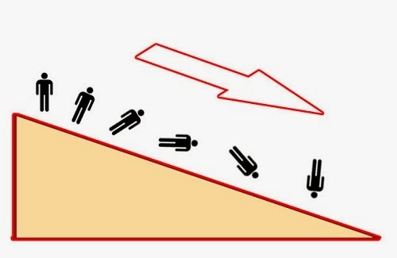

×
الرئيسية
عن التطبيق
☰
الرئيسية
الفهرس
المصادرة علي المطلوب
مغالطة المنشأ
التعميم المتسرع
تجاهل المطلوب
الرنجة الحمراء
الحجة الشخصية
الاحتكام الي السلطة
مناشدة الشفقة

الاحتكام الي عامة الناس
الاحتكام الي القوة
الاحتكام الي النتائج
الالفاظ الملقمة

المنحدر الزلق